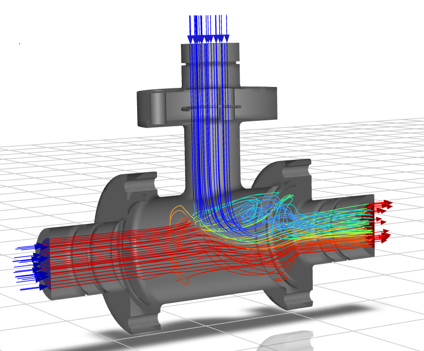
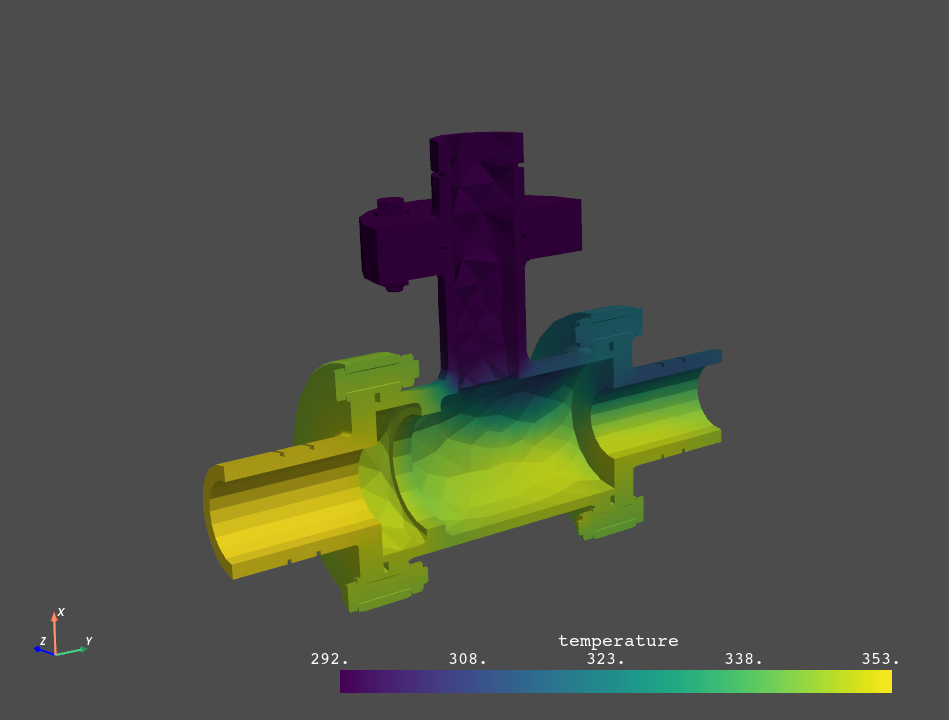
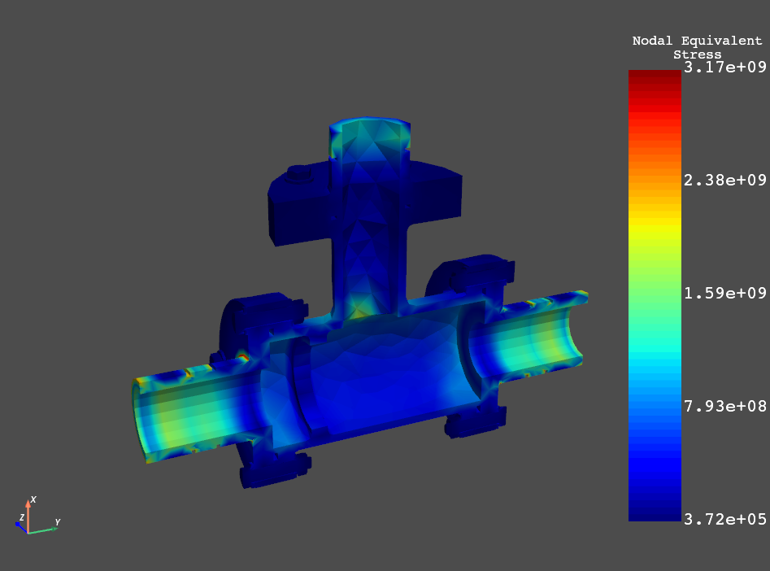

Note
Go to the end to download the full example code.
Twin evaluation of a 3D field ROM and data transfer to FEA model inputs#
This example shows how PyTwin can be used to load and evaluate a twin model to predict CFD results in the form of temperature fields. Temperature fields are used as inputs for an FEA thermal structural analysis of a T-junction that considers the mixing of two different flow temperatures. The example uses PyTwin to evaluate the twin results and convert them to an appropriate format. It then uses PyMAPDL to load the FEA model, apply the temperature loads coming from the twin, and perform the thermal structural analysis.
Note
To generate snapshot files at initialization time, the ROM included in the twin
must have its parameter field_data_storage_period set to 0 and its
parameter store_snapshots set to 1.
To generate images files at initialization time, the ROM included in the twin must
have the Embed Geometry and Generate Image options enabled at export time.
Additionally, its parameter viewX_storage_period must be set to 0.
These parameters can be defined in the Twin Builder subsheet before twin compilation or be exposed as twin parameters.
{kind=link}

# sphinx_gallery_thumbnail_path = '_static/TBROM_cosim_pymapdl.png'
Perform required imports and launch an instance of MAPDL#
Perform required imports, which include downloading and importing the input files, and launch an instance of MAPDL.
from ansys.mapdl.core import launch_mapdl
import numpy as np
from pytwin import TwinModel, download_file, snapshot_to_array
import pyvista as pv
twin_file = download_file("ThermalTBROM_23R1_other.twin", "twin_files", force_download=True)
fea_file = download_file("ThermalTBROM.dat", "other_files", force_download=True)
# start mapdl
mapdl = launch_mapdl()
print(mapdl)
Traceback (most recent call last):
File "C:\Users\ansys\Documents\actions-runner\_work\pytwin\pytwin\examples\02-tbrom_examples\01-TBROM_dataTransfer_pyMAPDL.py", line 72, in <module>
mapdl = launch_mapdl()
File "C:\Users\ansys\Documents\actions-runner\_work\pytwin\pytwin\.venv\lib\site-packages\ansys\mapdl\core\launcher.py", line 1667, in launch_mapdl
raise exception
File "C:\Users\ansys\Documents\actions-runner\_work\pytwin\pytwin\.venv\lib\site-packages\ansys\mapdl\core\launcher.py", line 1654, in launch_mapdl
mapdl = MapdlGrpc(
File "C:\Users\ansys\Documents\actions-runner\_work\pytwin\pytwin\.venv\lib\site-packages\ansys\mapdl\core\mapdl_grpc.py", line 477, in __init__
raise err # Raise original error if we couldn't catch it in post-mortem analysis
File "C:\Users\ansys\Documents\actions-runner\_work\pytwin\pytwin\.venv\lib\site-packages\ansys\mapdl\core\mapdl_grpc.py", line 469, in __init__
self._multi_connect(timeout=timeout)
File "C:\Users\ansys\Documents\actions-runner\_work\pytwin\pytwin\.venv\lib\site-packages\ansys\mapdl\core\mapdl_grpc.py", line 626, in _multi_connect
raise MapdlConnectionError(
ansys.mapdl.core.errors.MapdlConnectionError: Unable to connect to MAPDL gRPC instance at dns:///127.0.0.1:50052.
Reached either maximum amount of connection attempts (5) or timeout (45 s). The MAPDL process has died PID: 5720.
Define inputs#
Define inputs.
cfd_inputs = {"main_inlet_temperature": 353.15, "side_inlet_temperature": 293.15}
rom_parameters = {"ThermalROM23R1_1_store_snapshots": 1}
Import and save the mesh#
Reset MAPDL and import the geometry.
mapdl.clear()
mapdl.input(fea_file)
# Save the mesh as a VTK object.
print(mapdl.mesh)
grid = mapdl.mesh.grid # Save mesh as a VTK object
Load the twin runtime and generate temperature results#
Load the twin runtime and generate temperature results for the FEA mesh.
print("Loading model: {}".format(twin_file))
twin_model = TwinModel(twin_file)
twin_model.initialize_evaluation(inputs=cfd_inputs, parameters=rom_parameters)
rom_name = twin_model.tbrom_names[0]
snapshot = twin_model.get_snapshot_filepath(rom_name=rom_name)
geometry = twin_model.get_geometry_filepath(rom_name=rom_name)
Map temperature data to FEA mesh#
Map the temperature data to the FEA mesh.
temperature_data = snapshot_to_array(snapshot, geometry) # Save data to a NumPy array
nd_temp_data = temperature_data[:, :].astype(float) # Change data type to float
# Map temperature data to the FE mesh
# Convert imported data into PolyData format
wrapped = pv.PolyData(nd_temp_data[:, :3]) # Convert NumPy array to PolyData format
wrapped["temperature"] = nd_temp_data[:, 3] # Add a scalar variable 'temperature' to PolyData
# Perform data mapping
inter_grid = grid.interpolate(
wrapped, sharpness=5, radius=0.0001, strategy="closest_point", progress_bar=True
) # Map the imported data to MAPDL grid
inter_grid.plot(show_edges=False) # Plot the interpolated data on MAPDL grid
temperature_load_val = pv.convert_array(
pv.convert_array(inter_grid.active_scalars)
) # Save temperatures interpolated to each node as a NumPy array
node_num = inter_grid.point_data["ansys_node_num"] # Save node numbers as a NumPy array
{kind=link}

Apply loads and boundary conditions and solve the model#
Apply loads and boundary conditions and then solve the model.
# Read all nodal coordinates to an array and extract the X and Y
# minimum bounds
array_nodes = mapdl.mesh.nodes
Xmax = np.amax(array_nodes[:, 0])
Ymin = np.amin(array_nodes[:, 1])
Ymax = np.amax(array_nodes[:, 1])
# Enter /SOLU processor to apply loads and boundary conditions
mapdl.finish()
mapdl.slashsolu()
# Enter non-interactive mode to assign thermal load at each node using imported data
with mapdl.non_interactive:
for node, temp in zip(node_num, temperature_load_val):
mapdl.bf(node, "TEMP", temp)
# Use the X and Y minimum bounds to select nodes from five surfaces that are to be fixed
# Create a component and fix all degrees of freedom (DoFs)
mapdl.nsel("s", "LOC", "X", Xmax) # Select all nodes whose X coord.=Xmax
mapdl.nsel("a", "LOC", "Y", Ymin) # Select all nodes whose Y coord.=Ymin and add to previous selection
mapdl.nsel("a", "LOC", "Y", Ymax) # Select all nodes whose Y coord.=Ymax and add to previous selection
mapdl.cm("fixed_nodes", "NODE") # Create a nodal component 'fixed_nodes'
mapdl.allsel() # Revert active selection to full model
mapdl.d("fixed_nodes", "all", 0) # Impose fully fixed constraint on component created earlier
# Solve the model
output = mapdl.solve()
print(output)
Plot equivalent stress#
Plot equivalent stress.
mapdl.post1() # Enter postprocessor
mapdl.set(1, 1) # Select first load step
mapdl.post_processing.plot_nodal_eqv_stress() # Plot equivalent stress
{kind=link}

Exit MAPDL instance#
Exit the MAPDL instance.
mapdl.exit()
Total running time of the script: (1 minutes 4.251 seconds)